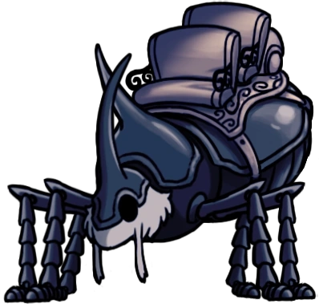

Acima da zona aonde iniciamos a jornada, existe essa área vázia, a única área que deixa em aberto o mundo fora do reino, mas não podemos sair. Os principais pontos de interesse aqui são: o ninho dos Besouros e a tocha da trupe de Grimm, o posterior sendo importante para acessar o conteúdo da DLC 'Trupe Grimm'.
Acima da zona aonde iniciamos a jornada, existe essa área vázia, a única área que deixa em aberto o mundo fora do reino, mas não podemos sair. Os principais pontos de interesse aqui são: o ninho dos Besouros e a tocha da trupe de Grimm, o posterior sendo importante para acessar o conteúdo da DLC 'Trupe Grimm'.
"O que você acha da minha antiga casa, pequenino?
Antigamente, ela era cheia de vida. Besouros iam e vinham, trocando histórias dos lugares que eles foram e passageiros que haviam conhecido.
Por um longo tempo, eu acreditava que era o único que havia sobrado. O último besouro.
Mas ter colocado os pés no Ninho outra vez... há algo no ar. Um cheiro, ou uma sensação de calor ou talvez uma presença?
Será que outros besouros escaparam para o mundo externo?
Sim, eu vou me agarrar a essa esperança. Minha raça, ainda está lá fora, visitando lugares além destas terras.
Mas para mim, eu nunca poderia abandonar as estradas dos besouros. Não enquanto os passageiros ainda precisam delas.
Noto que você ainda tem um trabalho importante a fazer, não é, pequenino? Eu vou ser o seu parceiro enquanto o meu velho corpo permite.
Nós desfrutaremos juntos das antigas estradas dos besouros deste reino um pouco mais" - O Último Bezouro